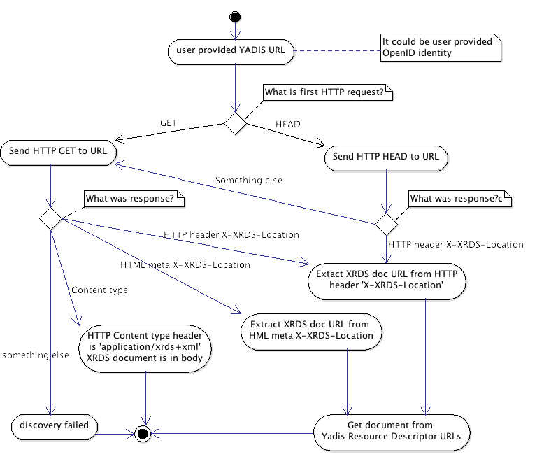

It's process for Relaying Party that provide endpoint and service description. Information about endpoint services are stored in XRDS document.
Previous picture shows how to get XRDS document. This document contains information where is technical enpoint that understand OpenId protocol. Discovered XRDS document can contain multiple service sections. Each Service section describe one endpoint technical capabilities. Technical endpoint is tag URI. Multiple tags 'Type' specified technical options for given endpoint. Following diagrams shows how relaying party select proper endpoint for OpenID version 2.0.